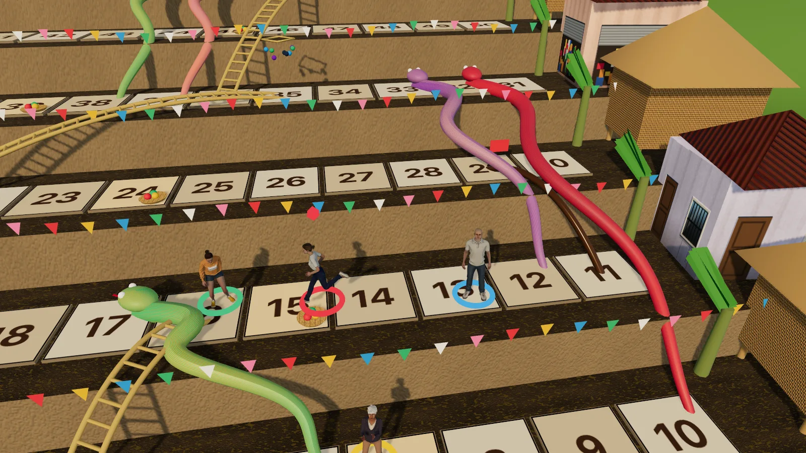

Akyat Pista
Snakes and Ladders, Pinoy style, in 3D

BoardTouch · Mouse · Keyboard · GamepadFree, in the browser
Play Akyat PistaAbout the game
The name means "climb to the fiesta". The board is a barrio built on a hillside, ten terraces stacked one above the other, and the town plaza with its church and stage sits at the very top, square 100. Up to four players start at the bottom and race to get there first.
It is still the Snakes and Ladders you played as a kid, with a few changes that give you real choices to make. Ladders take three forms: a plain bamboo hagdan (ladder), a greased palosebo pole, and a ladder with a pabitin of sweets hanging at the top. The snakes are painted in fiesta colors and wait with their heads swaying. You can play with friends passing one device around, against computer players, or any mix of the two.
How to play
On your turn you roll two dice, but you only move by one of them. You pick which. This is the heart of the game: if one die would drop you on a snake's head, you can usually take the other. Climb a ladder by landing at its foot; slide down a snake by landing on its head.
Some squares hold a pasalubong, the little gift Filipinos bring home after a trip. Land on one and you draw a card. You can hold two at a time:
- Ulit (again): roll both dice again, once per turn.
- Sakay (ride): add 2 steps to the die you choose.
- Agimat (charm): blocks the next snake you land on, all by itself.
- Palit (swap): trade places with another player before rolling. It uses up your turn.
If you land on the same square as a rival, they get bumped back three squares. To win you need the exact number to reach 100; roll too high and you bounce back off the top.
- Phone, tablet and mouse: tap or click the on-screen buttons to roll, choose a die and play cards.
- Keyboard: Space or Enter rolls, 1 or 2 picks a die, Q and W play your first and second card, hold Tab for a view of the whole board, and Esc pauses.
- Gamepad: A rolls and takes the first die, B takes the second, X and Y play cards, Start pauses.
Each seat can be a person or a CPU player at Madali (easy) or Mahirap (hard). The game remembers an unfinished match so you can continue later.
Tips
- Before choosing a die, look at both landing squares. Hold Tab, or check the board, so you know where the snakes are.
- Some snake heads sit in pairs on neighboring squares. Two dice help less there, so an Agimat is worth saving for those stretches.
- Sakay is at its best when the extra two steps reach a ladder you would otherwise just miss.
- Palit costs you a turn, so save it for a big gap, such as swapping with a leader who is far ahead of you.
- Near 100, pick the die that lands exactly, or the smaller one, so you do not bounce back too far.
- When a rival is a few squares ahead, bumping them back three can matter as much as moving yourself.
Snakes and ladders, and the fiesta at the top
Snakes and Ladders is far older than most people guess. It comes from India, where versions of it were played for centuries as a lesson in virtue and vice: good deeds were ladders that lifted you up, and bad ones were snakes that dragged you down. British families took it up in the 1800s, and from there it spread around the world. In the Philippines it is a classic printed on cheap paper boards and played on the floor with siblings and cousins.
Akyat Pista puts that race on the road to a town fiesta. Most towns and barrios hold a yearly fiesta for their patron saint, with a Mass, a procession, food in every house, and games in the plaza. Two of those games appear on the board. The palosebo is a tall bamboo pole greased slippery, with a prize at the top for whoever can shimmy up first. The pabitin is a wooden or bamboo frame hung with sweets and small toys, lowered and raised while children jump to grab what they can.
The cards borrow from daily life too. A pasalubong is the treat you bring back for family after being away, and an agimat is a charm or amulet that older Filipinos believed could protect the person carrying it.